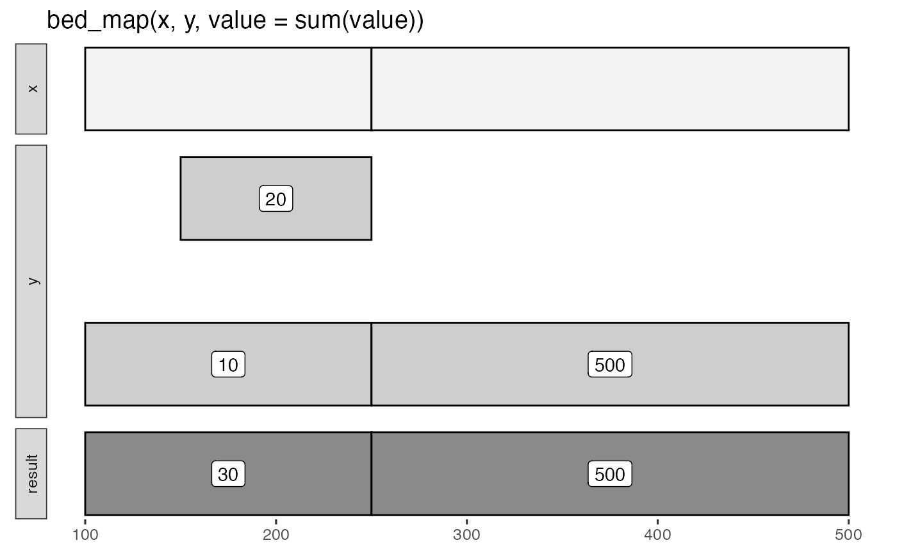

Apply functions like min() and count() to intersecting intervals.
bed_map() uses bed_intersect() to identify intersecting intervals, so
output columns will be suffixed with .x and .y. Expressions that refer to
input columns from x and y columns must take these suffixes into account.
Usage
bed_map(x, y, ..., min_overlap = 1)
concat(.data, sep = ",")
values_unique(.data, sep = ",")
values(.data, sep = ",")Details
Book-ended intervals can be included by setting min_overlap = 0.
Non-intersecting intervals from x are included in the result with NA
values.
input tbls are grouped by chrom by default, and additional
groups can be added using dplyr::group_by(). For example,
grouping by strand will constrain analyses to the same strand. To
compare opposing strands across two tbls, strands on the y tbl can
first be inverted using flip_strands().
See also
https://bedtools.readthedocs.io/en/latest/content/tools/map.html
Other multiple set operations:
bed_closest(),
bed_coverage(),
bed_intersect(),
bed_subtract(),
bed_window()
Examples
x <- tibble::tribble(
~chrom, ~start, ~end,
'chr1', 100, 250,
'chr2', 250, 500
)
y <- tibble::tribble(
~chrom, ~start, ~end, ~value,
'chr1', 100, 250, 10,
'chr1', 150, 250, 20,
'chr2', 250, 500, 500
)
bed_glyph(bed_map(x, y, value = sum(value)), label = 'value')

# summary examples
bed_map(x, y, .sum = sum(value))
#> # A tibble: 2 × 4
#> chrom start end .sum
#> <chr> <dbl> <dbl> <dbl>
#> 1 chr1 100 250 30
#> 2 chr2 250 500 500
bed_map(x, y, .min = min(value), .max = max(value))
#> # A tibble: 2 × 5
#> chrom start end .min .max
#> <chr> <dbl> <dbl> <dbl> <dbl>
#> 1 chr1 100 250 10 20
#> 2 chr2 250 500 500 500
# identify non-intersecting intervals to include in the result
res <- bed_map(x, y, .sum = sum(value))
x_not <- bed_intersect(x, y, invert = TRUE)
dplyr::bind_rows(res, x_not)
#> # A tibble: 2 × 4
#> chrom start end .sum
#> <chr> <dbl> <dbl> <dbl>
#> 1 chr1 100 250 30
#> 2 chr2 250 500 500
# create a list-column
bed_map(x, y, .values = list(value))
#> # A tibble: 2 × 4
#> chrom start end .values
#> <chr> <dbl> <dbl> <list>
#> 1 chr1 100 250 <dbl [2]>
#> 2 chr2 250 500 <dbl [1]>
# use `nth` family from dplyr
bed_map(x, y, .first = dplyr::first(value))
#> # A tibble: 2 × 4
#> chrom start end .first
#> <chr> <dbl> <dbl> <dbl>
#> 1 chr1 100 250 10
#> 2 chr2 250 500 500
bed_map(x, y, .absmax = abs(max(value)))
#> # A tibble: 2 × 4
#> chrom start end .absmax
#> <chr> <dbl> <dbl> <dbl>
#> 1 chr1 100 250 20
#> 2 chr2 250 500 500
bed_map(x, y, .count = length(value))
#> # A tibble: 2 × 4
#> chrom start end .count
#> <chr> <dbl> <dbl> <int>
#> 1 chr1 100 250 2
#> 2 chr2 250 500 1
bed_map(x, y, .vals = values(value))
#> # A tibble: 2 × 4
#> chrom start end .vals
#> <chr> <dbl> <dbl> <chr>
#> 1 chr1 100 250 10,20
#> 2 chr2 250 500 500
# count defaults are NA not 0; differs from bedtools2 ...
bed_map(x, y, .counts = dplyr::n())
#> # A tibble: 2 × 4
#> chrom start end .counts
#> <chr> <dbl> <dbl> <int>
#> 1 chr1 100 250 2
#> 2 chr2 250 500 1
# ... but NA counts can be coverted to 0's
dplyr::mutate(bed_map(x, y, .counts = dplyr::n()), .counts = ifelse(is.na(.counts), 0, .counts))
#> # A tibble: 2 × 4
#> chrom start end .counts
#> <chr> <dbl> <dbl> <int>
#> 1 chr1 100 250 2
#> 2 chr2 250 500 1